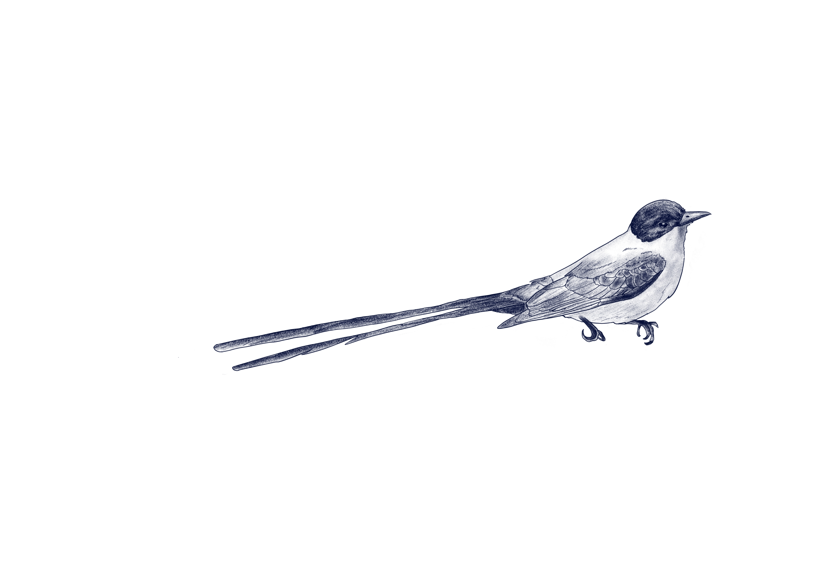

Tyrannus savana
Tijereta Sabanera

La Tijereta Sabanera (Tyrannus savana) es una especie de tipo fauna perteneciente a la familia Tyrannidae.
Se distribuye en las zonas del sur de México hasta Argentina y Paraguay, y es nativa de la zona de Punta del Diablo. Su estado de conservación es de preocupación menor.
Su morfología se destaca por un tamaño aproximado de 40 cm (los machos más grandes que las hembras), con colores negros y marrones, y una cola bifurcada extremadamente larga que es de 2 a 3 veces la longitud del cuerpo en los machos.
Presenta hábitos alimentarios principalmente insectívoros, alimentándose de insectos y frutas nativas, y se caracteriza por vivir en grupos, especialmente durante la migración donde pueden formar bandadas de hasta 10,000 individuos.